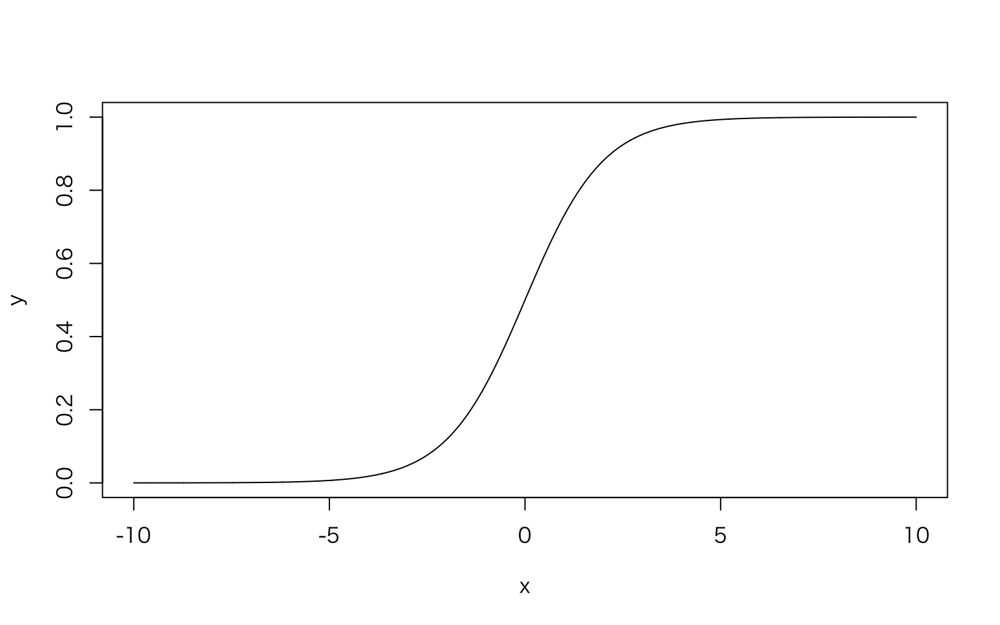

3-1章: 一般化線形モデルの基本
1. 目的と概要
- 一般化線形モデル(GLM): 実践的モデル & 複雑なモデルの部品
- 確率分布、線形予測子、リンク関数
- リファレンス的に使える章
2. 複雑なモデルを構築する際の手続きの標準化
- モデルをどう構築するか
- ビールの売り上げの例
- \(y \sim Normal(\mu,\sigma^2)\)
- これを複雑にしようとしたとき、“勝手に”やるばかりだと非効率かも
- 「モデルの方」「フレームワーク」
- 一般化線形モデルにおけるモデルの変更手続き
- 確率分布を変える
- 線形予測子を変える
- リンク関数を変える
3. 確率分布・線形予測子・リンク関数
- 確率分布
- 観測データを生む確率的過程を表現するためのもの。データに合わせて変える。
- ビールなら正規分布
- 小動物の数ならポアソン分布
- 購入比率なら二項分布
- 観測データを生む確率的過程を表現するためのもの。データに合わせて変える。
- 変数
- 応答変数・従属変数
- 説明変数
- 線形予測子
- 説明変数の線型結合
- リンク関数
- 応答変数と線形予測子を関係付けること
4. 一般化線形モデルの例: 説明変数が無く、正規分布を仮定するモデル
- ビール売り上げの例
- 凡例
- \(y_i\):売り上げデータ
- \(\mu_i\): \(y_i\)の期待値
- \(_i\): 何番目のデータか
- \(g\): 恒等関数（\(g(y)=y\)となる関数=何も起きない関数）
- 一般化線形モデル
- \(g(\mu_i)=\beta_0\)
- \(y_i \sim Normal(\mu, \sigma^2)\)
- \(\beta_0\)が線形予測子、恒等関数\(g()\)がリンク関数
- 書き換え
- \(\mu_i=\beta_0\)
- \(y_i \sim Normal(\mu, \sigma^2)\)
- 従属変数の平均値\(\mu_i\)が値\(\beta_0\)をとることを想定したモデル
- 凡例
5. 単回帰モデル: 説明変数が1つだけあり、正規分布を仮定するモデル
- ビールの売り上げが気温\(x\)によって変化するというモデル
- \(g(\mu_i)=\beta_0+\beta_1x_i\)
- \(y_i \sim Normal(\mu_i, \sigma^2)\)
- \(\beta_0+\beta_1x_i\)が線形予測子、恒等関数\(g()\)がリンク関数
- 書き換え
- \(\mu_i = \beta_0 + \beta_1x_i\)
- \(y_i \sim Normal(\mu_i, \sigma^2)\)
- 気温\(x\)が1変化すると\(\beta_1\)増減する
- 単回帰モデル
- \(\beta_0\)を切片
- \(\beta_1\)を\(x\)の係数・傾き
- 単回帰モデルを使うことで..
- 説明変数と従属変数の関係の考察
- 従属変数の予測
6. 分散分析モデル：ダミー変数を利用するモデル
- 説明変数が質的変数のとき
- ダミー変数を使う必要性
- ダミー変数：0 / 1
- 晴れ・雨・曇りを表現する
- 晴れ：0/1
- 雨: 0/1
- 状態-1の変数
- 1 0 -> 晴れ
- 0 1 -> 雨
- 0 0 -> 曇り
- ダミー変数を使う必要性
- ビールの例
- 売上が天気の影響を受ける
- \(x_1\):晴れなら1, \(x_2\): 雨なら1, \(g()\): 恒等関数
- \(g(\mu_i)=\beta_0+\beta_1x_{i1}+\beta_{i2}\)
- y Normal(_i, ^2)
- 書き換え
- \(\mu_i=\beta_0+\beta_1x_{i1}+\beta_{i2}\)
- 分散分析モデル
- 説明変数が質的データ
- 確率分布として正規分布
- \(x_1\):晴れなら1, \(x_2\): 雨なら1, \(g()\): 恒等関数
- 売上が天気の影響を受ける
7. 正規線形モデル：正規分布を仮定するモデル
- 単回帰モデルも分散分析モデルも含まれる
- リンク関数は恒等関数
- 確率分布は正規分布
- 説明変数は量的だけ（単回帰モデル）、質的だけ（分散分析モデル）、両方とも（？）
8. ポアソン回帰モデル
- 魚の釣果尾数のモデル化
- あまり釣れないし生の数のみ、ポアソン分布に従う
- 分布のパラメータ\(\lambda\)は気温と天気の影響を受ける
- \(p(y_i|\lambda_i)=\frac{\lambda_i^{y_i} exp(-\lambda_i)}{y_i!}\)
- ここから、ちょっと馬場本の式3.10, 3.11が分かりにくく感じたので、緑本p159の説明順を参考に表現を変えます。なんでexp()なのか、logなのかの説明がなくて分からない。
- パラメータ\(\lambda\)が次の式に従うとする
- \(\lambda_i = exp(\beta_0+\beta_1x_1+\beta_2x_2+\beta_3x_3)\)
- この式を変形すると
- \(log\lambda_i = \beta_0+\beta_1x_1+\beta_2x_2+\beta_3x_3\)
- リンク関数: \(log\lambda_i\) -> 対数リンク関数
- 線形予測子：\(\beta_0+\beta_1x_1+\beta_2x_2+\beta_3x_3\)
- 馬場本P159の式3.11
- \(\lambda=\beta_0+\beta_1x_1+\beta_2x_2+\beta_3x_3\) (3.11)
- は誤解しそう
- 緑本のように
- \(\lambda=exp(\beta_0+\beta_1x_1+\beta_2x_2+\beta_3x_3)\)
- とした方がいい気がする。
- ポアソン回帰には対数リンク関数、ロジスティック回帰にはロジットリンク関数＝正準リンク関数
- Rのglm()では特に指定しなけば確率分布ごとに異なる正準リンク関数が使われる
- なぜポアソン回帰には対数リンク関数を使うのか？
- 推定計算に都合がいいから(緑本P48): \(\lambda_i\)がexp(線形予測子)になるので、負になることがない。都合がいい。
- わかりやすいから（緑本P59あたり）：効果が掛け算になる。\(exp(\beta_0+\beta_1x_1)\)は\(exp(\beta_0)\times exp(\beta_1x_1)\)。複数の効果が掛け算で効いてくる方がもっともらしい。
- パラメータ\(\lambda\)が次の式に従うとする
9. ロジスティック回帰モデル: 二項分布を仮定するモデル
- コインの裏表、種子の発芽率（発芽するかしないか）、商品の購入率（するしない）
- 二値確率変数
- 二項分布
- 例：植物の種子の発芽率
- 10粒中発芽する種子数をモデル化
- 試行回数10の二項分布、成功確率\(p\)
- \(p\)は日照の有無と栄養素の量に影響される
- \(y_i\): 10粒のうち発芽した数
- \(x_{i1}\): 日が当たっていれば1、当たっていなければ0のダミー変数
- \(x_{i2}\): 栄養素の量
- \(logit(p_i)=\beta_0+\beta_1x_1+\beta_2x_2\)
- \(y\sim Binom(10,p_i)\)
- ロジット関数\(logit()\)
- \(logit(p)+log(\frac{p}{1-p})\)
- ロジット関数の逆関数＝ロジスティック関数
- \(logistic(x)=\frac{1}{1+exp(-x)}\)
- 10粒中発芽する種子数をモデル化
x<-seq(-10,10,0.01)
y<-1/(1+exp(-x))
plot(x,y,type='l')